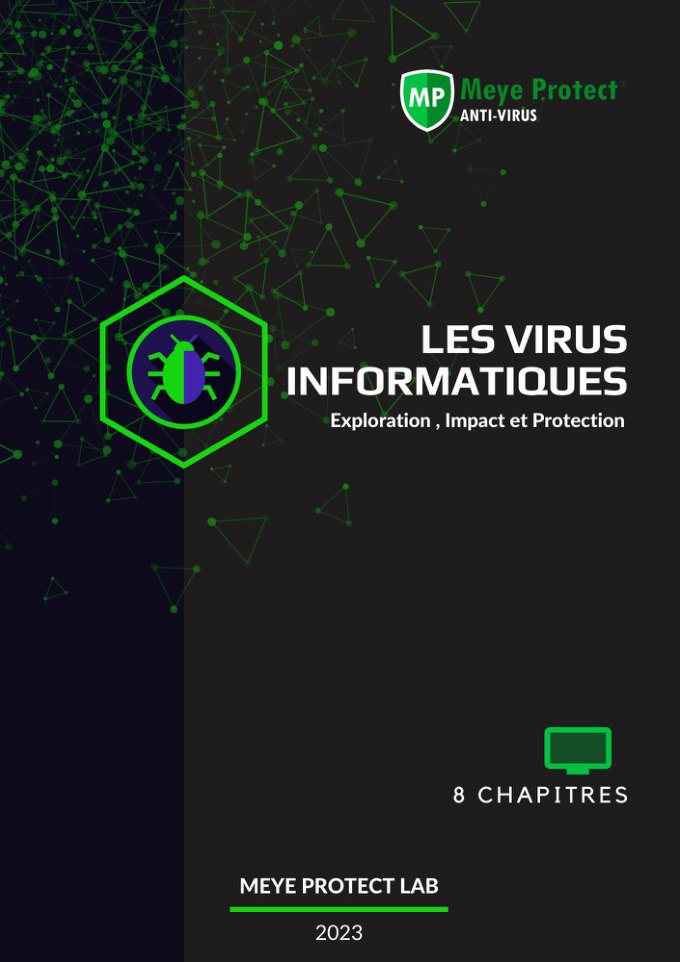

Les Virus informatiques




Carte d’identité
- Auteur
- Meye Protect Lab
- Genre
- Savoirs
- Sous-genre
- Informatique et numérique
- Éditeur
- Meye Protect Lab
- Parution de l’édition
- 2023
- ISBN
- Non confirmé
- Langue de l’édition
- Français
- Fichier du site
- PDF · 60 pages
Guide pratique daté de 2023 dans le document. Préface signée Serge Stéphane Meye-Ba-Ntyam.
 Résumé du livreL’essentiel en quelques lignes
Résumé du livreL’essentiel en quelques lignes
Ce guide présente plusieurs familles de logiciels malveillants et les effets qu’ils peuvent avoir sur les personnes et les organisations. Des cas connus rendent les différences plus concrètes. Les derniers chapitres reviennent sur la prévention, les responsabilités et les évolutions observées lors de la rédaction.
 Chapitre par chapitre8 entrées
Chapitre par chapitre8 entrées
-
01 Reconnaître les grandes famillesPDF p. 8
Le guide introduit le vocabulaire des logiciels malveillants et retrace les premiers exemples. Il explique pourquoi le mot « virus » est souvent employé dans un sens plus large.
Lire à cette page ↗ -
02 Suivre la propagationPDF p. 13
Le chapitre décrit les chemins qui permettent à un fichier ou à un programme malveillant d’atteindre une machine. Il aborde aussi les techniques de dissimulation à un niveau général.
Lire à cette page ↗ -
03 Mesurer les effetsPDF p. 19
Des fichiers personnels aux infrastructures collectives, le chapitre suit les conséquences d’une infection. Il distingue le dommage immédiat, les pertes de données et le coût de la remise en état.
Lire à cette page ↗ -
04 Comprendre des cas connusPDF p. 25
Le guide s’appuie sur Morris, ILOVEYOU, Stuxnet, WannaCry et Zeus pour comparer des programmes aux cibles et aux effets très différents.
Lire à cette page ↗ -
05 Se protéger au quotidienPDF p. 33
L’auteur aborde les outils de protection, les sauvegardes, les mises à jour et la sensibilisation. Le chapitre rassemble des mesures qui se complètent.
Lire à cette page ↗ -
06 Responsabilités et questions éthiquesPDF p. 41
Le guide pose la question du dommage et de la responsabilité des utilisateurs et des développeurs. Il évoque également la dimension juridique des attaques.
Lire à cette page ↗ -
07 Les évolutions à surveillerPDF p. 46
Le chapitre présente des tendances observées au moment de la rédaction du guide. Il demande comment la protection peut s’adapter quand les pratiques et les appareils changent.
Lire à cette page ↗ -
08 Résumer la préventionPDF p. 54
La conclusion réunit les conseils du guide et insiste sur la vigilance, l’apprentissage et la préparation. Elle présente la sécurité comme une démarche à entretenir dans le temps.
Lire à cette page ↗
Les fils du livre


Mon carnet de lecture
Mes étoiles
0 critique
Ma critique sur ce livre ↗